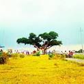
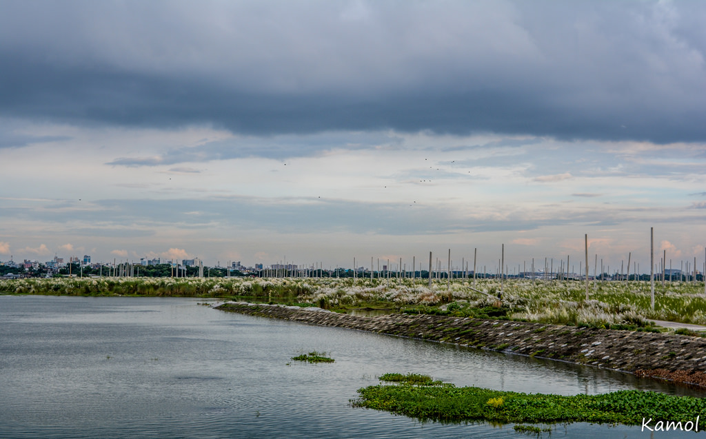
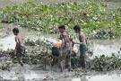

Welcome to sonargaon
Ahsan Manzil (Bengali: আহসান মঞ্জিল, Ahsan Monjil) was the official residential palace and seat of the Nawab of Dhaka.[1] The building is situated at Kumartoli along the banks of the Buriganga River in Dhaka, Bangladesh. Construction was started in 1859 and was completed in 1872.[1] It was constructed in the Indo-Saracenic Revival architecture. It has been designated as a national museum.
More places
-  Diabari är ett vattendrag i Guinea.[1] Det ligger i regionen Faranah Region, i den centrala delen av landet, 300 km öster om huvudstaden Conakry.
-  It is one of the most attractive place in Dhaka.
Kuakata
Madhupur is a town of Madhupur Upazila, Tangail, Bangladesh. The town is 51 km northeast of Tangail city, 47 km southwest of Mymensingh city and 137 km northwest of Dhaka city, the capital of Bangladesh.